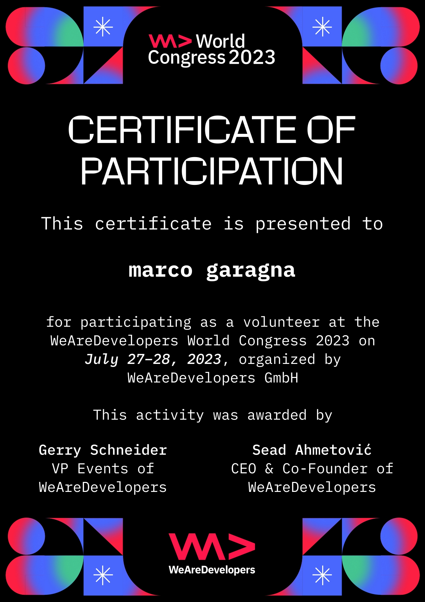
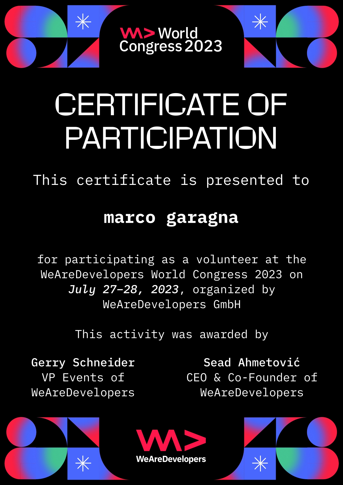

"Programming isn't about what you know;
it's about what you can figure out." - Chris Pine
Welcome to My Learning Journey in 2023
Thank you for visiting! I'm currently working on this page to document my learning path and the exciting technologies I'm exploring in 2023. Stay tuned for updates as I embark on my coding adventure, experiment with new tools, and broaden my skills in the world of technology.
Here, you'll find insights into the courses I'm taking, projects I'm working on, and the knowledge I'm gaining in various domains. It's a dynamic space that will evolve throughout the year as I continue to learn and grow.
If you're curious about the technologies I'm diving into or want to explore my coding journey, feel free to check back periodically. I look forward to sharing my experiences with you!
Simplifying Onboarding with Comprehensive Documentation
Overview:
In this project, I focused on creating detailed technical documentation for our software stack, including Spring, Maven, JSF, JSP, and Java EE web apps. The goal was to make these documents accessible to a wide audience, from developers to newcomers. By sharing key insights, I hope to streamline the onboarding process and save valuable time for our developer team. Previously, such documentation was missing, and its potential impact on our team's efficiency cannot be overstated.
Key Features:
- Easy-to-understand documentation.
- Inclusion of Spring, Maven, JSF, JSP, and Java EE.
- Accessibility for a wide-ranging audience.
Note: Keep an eye out for upcoming insights from this project that promise to make onboarding more efficient for everyone on the team.
Credentials and Accomplishments
 

Glossary
- @Autowired:
- Think of it like a magic stamp in your code. When you see @Autowired, it means that Spring, a tool in Java, automatically connects the right parts of your application. It makes it easier to link different pieces of your code by automatically figuring out how they should work together and creating objects when needed.
- Bean:
- A "Bean" is simply a data object. It stores information used in your software, like a container for data. Beans are often used in the Java programming language to organize and use data in a clear way.
- Context and Dependency Injection (CDI):
- Context and Dependency Injection (CDI) is a way to efficiently manage dependencies and access context information in an application. CDI helps you manage objects, known as Beans, in a container and control dependencies between them. This promotes loose coupling between different parts of an application and encourages code reusability.
- Data Access Object (DAO):
- The Data Access Object (DAO) represents an interface to the database in your application. It acts as a mediator between your application logic and the database. DAO allows you to retrieve, store, or modify data in the database without dealing with complex internal database details. It promotes a clean and organized structure in your software by separating data access logic from other parts of your application. In other words, DAO is your formal connection to the database.
- Dependency Injection (DI):
- Dependency Injection (DI) is an important concept in software development. It enables a clean separation of software components and minimizes dependencies between them. In formal settings, DI is used to optimize software organization. It ensures that required resources are provided by external sources rather than being created by the component itself. This significantly improves the maintainability and extensibility of software projects.
- Framework:
- A framework is like a toolkit for programmers. It provides pre-built tools and structures to help you program faster and more efficiently without having to create everything from scratch.
- JPA (Java Persistence API):
- JPA stands for Java Persistence API and is a Java standard for managing database access in Java applications. JPA allows developers to perform database operations in Java applications without having to write SQL queries directly. JPA provides an object-oriented way to access databases, allowing developers to work with Java objects that represent database data in their Java application. This allows for easier handling and a cleaner separation between the application logic and the database communication. In practice, developers use JPA to access databases, store, retrieve, and update data. It's as if JPA is the bridge between the world of object-oriented programming and relational databases.
- MVC Architecture (Model-View-Controller):
- The MVC architectural pattern is a kind of blueprint for organizing your code in a software application. It's like dividing tasks in a team project.
- The Model is like the brain. It manages the data and the business logic of your application. Think of it as the database and the rules for processing data.
- The View is like the appearance of your application, what users see and interact with. It displays information from the Model but without logic. It's like a store's shop window.
- The Controller is the mediator between the Model and the View. It receives user requests, processes them, and updates the Model or the View accordingly. It's like the conductor of an orchestra, ensuring that all instruments play in harmony.
- ORM Object Relational Mapping:
- It enables seamless interaction between object-oriented programming and relational databases. ORM facilitates the translation of database tables into object-oriented classes and vice versa. This allows developers to perform database operations using object-oriented code without having to manually write SQL queries.
- POJO (Plain Old Java Object):
- A POJO, which stands for "Plain Old Java Object", is a simple Java object without any special framework dependencies or additional requirements. It is, so to speak, a "normal" Java object that can be used independently of any special frameworks or technologies. POJOs are often used in Java development to represent data or business logic. They are simple, understandable and easily reusable. A POJO typically follows the basic conventions and best practices of Java programming, without any special extensions or interfaces. In the world of software development, POJO represents the idea that simple, straightforward objects are often more effective and maintainable than complex and highly specialized objects. A POJO is like a basic building block in a Lego set - simple, versatile and easy to combine.
- Project Object Model (POM):
- The Project Object Model (POM) is a fundamental concept in software development, especially in the context of Apache Maven. It is an XML file that represents a comprehensive blueprint for your project. The POM contains important information such as libraries, dependencies, versions and build settings. Similar to a blueprint, the POM gives your build management tool instructions for creating and managing your software. It acts as a guide that shows your project the path to successful completion.
- Proxy design pattern:
- The proxy design pattern is a concept in software development that is formally applied. It is used to control and control access to another object without using it directly. The proxy is a kind of intermediary or representative that stands between the client code and the actual object. It can be used to perform various tasks such as caching data, lazy loading of resources, or controlling access to an object.
- XML (Extensible Markup Language):
- XML stands for Extensible Markup Language and is a markup language for representing hierarchical structured data in text form. XML is often used to store and exchange data in a machine-readable form. XML uses tags to structure data. Each XML document consists of elements arranged in a hierarchical tree.
Java-based calculator
Overview:
This project is a simple Java-based calculator application designed for educational purposes. It follows the Model-View-Controller (MVC) architectural pattern, separating the graphical user interface (GUI) from the core calculation logic. The GUI is implemented using Swing, a Java GUI toolkit, featuring buttons for basic arithmetic operations (addition, subtraction, multiplication, division), an equals button for calculation, and a text field for user input. The MVC pattern enhances modularity and maintainability by isolating the GUI, calculation logic, and user interactions, making it a valuable learning resource for Java developers.
Key Features:
- User-Friendly GUI: The project features an intuitive graphical user interface (GUI) built using Java's Swing toolkit, making it accessible to users.
- Real-time Calculation: The application performs real-time calculations, providing instant results to users as they input numbers and select operations.
- Robust Error Handling: The code includes robust error handling mechanisms, ensuring smooth operation even in the face of unexpected issues.
- Clear Input Handling: The GUI handles user input gracefully, allowing for the entry of numerical values and clearing the input field after an operation is selected.
Contact Me
If you'd like to get in touch with me, please feel free to send me an email.
I'd love to hear from you! marcogara24@gmail.com
© 2023 Marco Garagna